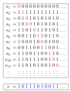
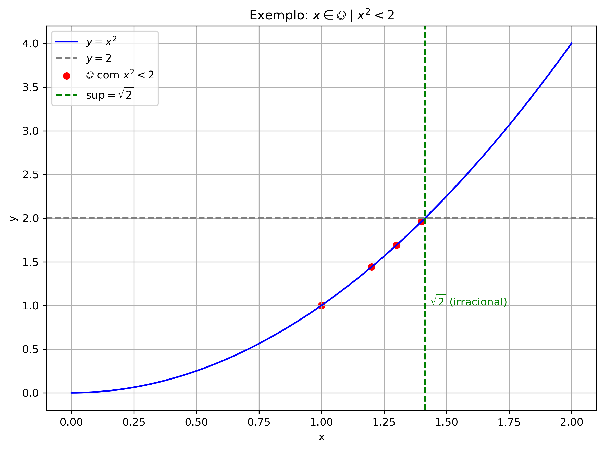

import matplotlib.pyplot as plt
import numpy as np
# Valores de x em um domÍnio visual interessante
x = np.linspace(0, 2, 400)
y = x**2
# Conjunto dos racionais x com x^2 < 2
# Escolhendo alguns pontos racionais especÍficos
rational_x = np.array([1.0, 1.2, 1.3, 1.4])
rational_y = rational_x**2
# Valor de sqrt(2)
sqrt2 = np.sqrt(2)
# Criando a imagem
plt.figure(figsize=(6, 4))
plt.plot(x, y, label=r'$y = x^2$', color='blue')
plt.axhline(2, color='gray', linestyle='--', label=r'$y = 2$')
plt.scatter(rational_x, rational_y, color='red', label=r'$\mathbb{Q}$ com $x^2 < 2$')
# Marcação do supremo
plt.axvline(sqrt2, color='green', linestyle='--', label=r'$\sup = \sqrt{2}$')
plt.text(sqrt2 + 0.02, 1, r'$\sqrt{2}$ (irracional)', color='green')
# Ajustes visuais
plt.title(r'Exemplo: $x \in \mathbb{Q} \mid x^2 < 2$')
plt.xlabel('x')
plt.ylabel('y')
plt.grid(True)
plt.legend()
plt.tight_layout()
# Mostrar imagem
plt.show()1.2 Conjuntos Numéricos
matemática
cálculo
conjuntos
conjuntos numéricos
Entenda os principais conjuntos numéricos, os tipos de intervalos e como resolver inequações básicas.
↠Voltar para a Seção de Matemática 🧮
↠Voltar para os Cursos de Matemática 📠🧮
🯠Post Anterior: 👉 1.1 O que é Cálculo? História e aplicações
Neste post, exploramos os conjuntos numéricos fundamentais que serão utilizados ao longo do curso, destacando suas principais propriedades e exemplos caracterÍsticos. Em uma primeira leitura, as seções de aprofundamento podem ser omitidas.
1 🔢 Conjuntos Numéricos
1.1 ✨ O que são Conjuntos Numéricos?
Os conjuntos numéricos são grupos de números que compartilham caracterÍsticas comuns. Os principais conjuntos que usaremos são:
Números Naturais \((\mathbb{N})\): \(\{0, 1, 2, 3, \ldots\}\)
Usados para contar objetos, são os números inteiros não-negativos.Números Inteiros \((\mathbb{Z})\): \(\{\ldots, -3, -2, -1, 0, 1, 2, 3, \ldots\}\)
Incluem todos os números naturais, seus opostos negativos e o zero.Números Racionais \((\mathbb{Q})\): números que podem ser escritos como fração \(\dfrac{a}{b}\), onde \(a, b \in \mathbb{Z}\) e \(b \neq 0\).
Exemplo: \(\frac{1}{2}\), \(-\frac{3}{4}\), \(5\) (que é \(\frac{5}{1}\)).Números Irracionais \((\mathbb{R} \setminus \mathbb{Q})\): números que não podem ser expressos como fração de dois inteiros, ou seja, não existe uma razão \(\dfrac{a}{b}\), com \(a \in \mathbb{Z}\) e \(b \in \mathbb{Z} \setminus \{0\}\), que o representem de forma exata. Sua representação decimal nunca termina nem se repete, como ocorre com \(\sqrt{2}\) ou \(\pi\).
Números Reais \((\mathbb{R})\): todos os números que podem ser representados na reta numérica, incluindo racionais e irracionais (como \(\sqrt{2}\), \(\pi\), \(e\)).

Crédito: Por Phrood~commonswiki - Obra do próprio, DomÍnio público, Hiperligação
1.2 🧠Organização dos Conjuntos Numéricos
Os conjuntos numéricos não estão isolados — eles se organizam em uma hierarquia onde cada conjunto é subconjunto de outro mais amplo:
Crédito: Por Mortalmoth - Obra do próprio, DomÍnio público, Hiperligação
Essa estrutura pode ser representada assim:
\[ \mathbb{N} \subset \mathbb{Z} \subset \mathbb{Q} \subset \mathbb{R} \]
Isso significa, por exemplo, que todo número natural é também inteiro, racional e real — mas o contrário nem sempre é verdadeiro.
1.3 🔠🧠Saiba Mais: O que é um número irracional?
🧠Saiba Mais: O que é um número irracional?
🔢 Como vimos acima, um número irracional é um número real que não pode ser expresso como fração de dois inteiros; ou seja, não existe uma razão \(\dfrac{a}{b}\), com \(a \in \mathbb{Z}\) e \(b \in \mathbb{Z} \setminus {0}\), que o represente de forma exata.
✳️ Esses números possuem representação decimal infinita e não periódica, diferentemente dos racionais, que possuem representação decimal finita ou periódica. Exemplos famosos incluem:
\(\pi = 3{,}14159265\ldots\)
\(e = 2{,}71828182\ldots\)
\(\sqrt{2} = 1{,}4142135\ldots\)
📌 Os irracionais surgem naturalmente em diversos contextos matemáticos, como:
a diagonal de um quadrado de lado 1 \((\text{que é } \sqrt{2})\);
o perÍmetro de uma circunferência (relacionado a \(\pi\));
o crescimento exponencial e os logaritmos naturais (relacionados a \(e\)).
📜 A existência dos números irracionais foi uma descoberta histórica marcante na Grécia Antiga, especialmente entre os pitagóricos, que inicialmente acreditavam que todo número era racional — até a demonstração de que \(\sqrt{2}\) não poderia ser expresso como uma fração.
1.4 🧠Aprofundamento: Demonstração de que \(\sqrt{2}\) não é racional
🧠Aprofundamento: Demonstração de que \(\sqrt{2}\) não é racional
Proposição: \(\sqrt{2} \notin \mathbb{Q}\), ou seja, \(\sqrt{2}\) é irracional.
Demonstração (por redução ao absurdo):
Suponha, por absurdo, que \(\sqrt{2}\) seja um número racional. Então, existem inteiros \(a\) e \(b\), com \(b \ne 0\), tais que:
\[ \sqrt{2} = \frac{a}{b} \]
Além disso, podemos supor que a fração \(\dfrac{a}{b}\) está irredutÍvel, ou seja, \(\mathrm{mdc}(a, b) = 1\).
Elevando ambos os lados ao quadrado:
\[ 2 = \frac{a^2}{b^2} \Rightarrow a^2 = 2b^2 \]
Portanto, \(a^2\) é par, o que implica que \(a\) também é par, pois se \(a\) fosse Ímpar, \(a^2\) também seria Ímpar. Assim, existe um inteiro \(k\) tal que \(a = 2k\).
Substituindo:
\[ (2k)^2 = 2b^2 \Rightarrow 4k^2 = 2b^2 \Rightarrow b^2 = 2k^2 \]
Logo, \(b^2\) também é par, e portanto \(b\) é par.
Contradição: \(a\) e \(b\) são pares ⇒ \(\mathrm{mdc}(a, b) \geq 2\),
contrariando a hipótese de que a fração \(\dfrac{a}{b}\) era irredutÍvel.
Logo, a suposição de que \(\sqrt{2}\) é racional é falsa.
\[
\therefore \sqrt{2} \notin \mathbb{Q}
\]
1.5 🧠Aprofundamento: Comentário sobre o método de demonstração
🧠Aprofundamento: Comentário sobre o método de demonstração
A demonstração da irracionalidade de \(\sqrt{2}\) é um clássico exemplo de prova por redução ao absurdo (ou prova indireta).
Nesse método, parte-se da suposição contrária ao que se deseja provar — no caso, supõe-se que \(\sqrt{2} \in \mathbb{Q}\), ou seja, que pode ser escrita como uma fração \(\dfrac{a}{b}\) com \(a\) e \(b \in \mathbb{Z}\) e \(\mathrm{mdc}(a,b) = 1\).
A partir dessa hipótese, deduz-se logicamente que \(a\) e \(b\) seriam ambos pares — o que contradiz a condição inicial de que \(a\) e \(b\) não têm fatores comuns.
Essa contradição mostra que a suposição original não pode ser verdadeira.
Assim, conclui-se que \(\sqrt{2}\) não é um número racional.
Esse método é bastante utilizado em várias áreas da Matemática, principalmente quando não se conhece uma forma direta de prova.
1.6 📘 🧠ExercÍcios — Identificando Números Irracionais
📘 🧠ExercÍcios — Identificando Números Irracionais
Classifique os números abaixo como racionais ou irracionais:
\(\sqrt{9}\)
\(\sqrt{5}\)
\(\frac{4}{7}\)
\(\pi\)
\(0{,}101001000100001\ldots\)
Qual das alternativas representa um número irracional?
A. \(\frac{7}{3}\)
B. \(1{,}333\ldots\)
C. \(\sqrt{2}\)
D. \(0{,}5\)Verdadeiro ou Falso:
- Todo número decimal infinito é irracional.
- \(\sqrt{25}\) é um número irracional.
- Existem mais números irracionais do que racionais.
- Todo número decimal infinito é irracional.
1.7 📘 Gabarito
📘 Gabarito
- Racional (resultado é 3)
- Irracional (não é raiz exata)
- Racional
- Irracional
- Irracional (decimal não periódico)
Alternativa correta: C. \(\sqrt{2}\)
- Falso — apenas os decimais infinitos não periódicos são irracionais. Os decimais infinitos periódicos são racionais.
- Falso — \(\sqrt{25} = 5\), e 5 é um número natural, portanto racional.
- Verdadeiro — o conjunto dos números racionais é enumerável (ou seja, existe uma correspondência com os números naturais), o que significa que ele é contável.
Já os números irracionais formam um conjunto não enumerável, ou seja, incontável. Isso foi demonstrado por Georg Cantor, que provou que a quantidade de números reais (e, portanto, irracionais) é estritamente maior que a quantidade de números racionais.
Assim, existem “infinitamente mais†irracionais do que racionais na reta real.
1.8 📜 Nota Histórica: 👤 Georg Cantor (1845–1918)
📜 Nota Histórica: 👤 Georg Cantor (1845–1918)
Georg Cantor foi um matemático alemão que revolucionou a matemática ao criar a teoria dos conjuntos e desenvolver o conceito moderno de infinito.
Ele demonstrou que nem todos os infinitos são iguais, provando que o conjunto dos números reais (e, portanto, dos irracionais) é incontável (ou não enumerável), enquanto o conjunto dos racionais é contável (ou enumerável).
Apesar da resistência de muitos matemáticos de sua época, como Kronecker, Cantor persistiu em suas ideias e hoje é reconhecido como o pai da teoria dos conjuntos.
Sua obra lançou as bases para a matemática moderna, a lógica e a análise, influenciando profundamente áreas como a topologia, a computabilidade e a filosofia da matemática.
1.9 🧠Aprofundamento: Conjuntos Enumeráveis e Não Enumeráveis
🧠Aprofundamento: Conjuntos Enumeráveis e Não Enumeráveis
- Conjunto Enumerável (ou contável): é um conjunto cujos elementos podem ser colocados em correspondência biunÍvoca com os números naturais. Ou seja, podemos listar seus elementos numa sequência (mesmo que infinita).
Exemplos:- Conjunto dos números naturais \(\mathbb{N}\).
- Conjunto dos inteiros \(\mathbb{Z}\).
- Conjunto dos racionais \(\mathbb{Q}\).
- Conjunto Não Enumerável (ou incontável): é um conjunto tão “grande†que não pode ser listado em sequência, mesmo infinita.
O exemplo mais famoso é:- O conjunto dos números reais \(\mathbb{R}\) \((\)especialmente os irracionais, como \(\pi\) e \(\sqrt{2}\)\()\).
Resumo:
Enumerável → Pode listar (como uma fila infinita).
Não enumerável → Não pode listar; tem “mais†elementos que os naturais.
1.10 🧠Aprofundamento: O Método Diagonal de Cantor
🧠Aprofundamento: O Método Diagonal de Cantor
O método diagonal de Cantor é uma prova elegante e poderosa criada por Georg Cantor para demonstrar que os números reais são mais numerosos do que os números naturais, ou seja, que o conjunto dos reais não é enumerável.
🧩 Ideia principal
Cantor mostrou que nenhuma lista que tente enumerar todos os números reais entre 0 e 1 pode ser completa. Ele faz isso construindo um número novo, que difere de todos os números da lista, alterando diagonalmente os dÍgitos da representação decimal.
🔠Passo a passo simplificado:
Suponha que seja possÍvel listar todos os números reais entre 0 e 1 como:
x₁ = 0.a₁₁ a₁₂ a₁₃ a₁₄ ... xâ‚‚ = 0.aâ‚‚â‚ aâ‚‚â‚‚ a₂₃ aâ‚‚â‚„ ... x₃ = 0.a₃₠a₃₂ a₃₃ a₃₄ ... ...Cantor constrói um novo número real, alterando os dÍgitos da diagonal:
- Escolhe o 1º dÍgito do 1º número, o 2º dÍgito do 2º número, o 3º dÍgito do 3º número, etc.
- Em cada posição, troca o dÍgito por um diferente (por exemplo, se for 5, troca por 6).
- Escolhe o 1º dÍgito do 1º número, o 2º dÍgito do 2º número, o 3º dÍgito do 3º número, etc.
O novo número, assim construÍdo, difere de cada número da lista em ao menos um dÍgito — o da diagonal.
✅ Conclusão:
Esse número não pode estar na lista original, o que leva à contradição: portanto, os reais não são enumeráveis.

Método Diagonal de Cantor
Crédito: Por Jochen Burghardt — Obra do próprio, CC BY-SA 3.0
1.11 ✨ Representação Decimal dos Números Reais
Os números reais podem ser representados por uma expansão decimal finita ou infinita. Vamos explorar alguns exemplos e distinguir os principais casos:
🔹 Exemplo 1: Número racional com decimal finito (decimal exato)
Considere \(\dfrac{3}{4}\):
Passo a passo:
Divida 3 por 4:
\(3 \div 4 = 0{,}75\)Conclusão:
\(\dfrac{3}{4} = 0{,}75\)
→ Decimal finito.
→ É um número racional.
🔹 Exemplo 2: Número racional com decimal infinito periódico
Considere \(\dfrac{1}{3}\):
Passo a passo:
Divida 1 por 3:
\(1 \div 3 = 0{,}333\ldots\)Conclusão:
\(\dfrac{1}{3} = 0{,}\overline{3}\)
→ Decimal infinito periódico.
→ É um número racional.
🔹 Exemplo 3: Número irracional com decimal infinito não periódico
Considere \(\sqrt{2}\):
Passo a passo:
Aproximação decimal:
\(\sqrt{2} \approx 1{,}4142135\ldots\)Observe que:
- Não termina.
- Não apresenta repetição de padrão.
Conclusão:
\(\sqrt{2}\) → Decimal infinito não periódico
→ É um número irracional.
✅ Observação Geral:
- Todo número racional tem representação decimal finita ou infinita periódica.
- Todo número irracional tem representação decimal infinita não periódica.
1.12 ✨ Representação Decimal dos Números Racionais — DÍzimas Periódicas
A representação decimal de todo número racional (ou seja, frações de inteiros com denominador ≠0) é finita ou uma dÍzima periódica.
Vamos explorar exemplos com passo a passo:
🔢 Exemplo 1: \(\dfrac{1}{3}\)
Dividindo 1 por 3:
1 ÷ 3 = 0,3333...A parte decimal repete o dÍgito 3 indefinidamente.
✅ DÍzima periódica simples:
\(\dfrac{1}{3} = 0,\overline{3}\)
🔢 Exemplo 2: \(\dfrac{4}{11}\)
4 ÷ 11 = 0,363636...O bloco “36†se repete.
✅ DÍzima periódica simples:
\(\dfrac{4}{11} = 0,\overline{36}\)
🔢 Exemplo 3: \(\dfrac{7}{8}\)
7 ÷ 8 = 0,875✅ Representação decimal finita:
Não é dÍzima — termina após alguns algarismos.
🔢 Exemplo 4: \(\dfrac{12}{90}\)
12 ÷ 90 = \(0,1\overline{3}\)
Neste caso, a parte não periódica é o 1, e o dÍgito 3 se repete infinitamente.
✅ DÍzima periódica composta:
\(\dfrac{12}{90} = 0,1\overline{3}\)
🧠Observação Importante
- Se a fração irredutÍvel tiver denominador com fatores apenas 2 e 5, a representação decimal é finita.
- Caso contrário, a fração terá dÍzima periódica.
Por exemplo:
| Fração | Decimal | Tipo |
|---|---|---|
| \(\dfrac{1}{2}\) | 0,5 | Finita |
| \(\dfrac{1}{4}\) | 0,25 | Finita |
| \(\dfrac{1}{6}\) | \(0,1\overline{6}\) | DÍzima periódica composta |
| \(\dfrac{2}{9}\) | \(0,\overline{2}\) | DÍzima periódica simples |
| \(\dfrac{12}{90}\) | \(0,1\overline{3}\) | DÍzima periódica composta |
📌 Todo número com dÍzima periódica é racional.
E o inverso também é verdadeiro: todo número racional tem representação decimal finita ou periódica.
1.13 🧠Aprofundamento: Demonstração da Finitude da Representação Decimal
🧠Aprofundamento: Demonstração da Finitude da Representação Decimal
Seja uma fração racional irredutÍvel \(\dfrac{a}{b}\), com \(a \in \mathbb{Z}\) e \(b \in \mathbb{N}\).
A representação decimal de \(\dfrac{a}{b}\) será finita se e somente se for possÍvel escrevê-la como uma fração com denominador da forma \(10^n\).
Sabemos que \(10^n = 2^n \cdot 5^n\), ou seja, os únicos fatores primos de \(10^n\) são 2 e 5.
Logo, se a fração \(\dfrac{a}{b}\) puder ser reescrita com denominador \(10^n\), então o denominador original \(b\) (já simplificado com \(a\)) só pode conter os fatores primos 2 e 5.
Se \(b\) tiver algum outro fator primo (como 3, 7, 11, etc.), então não será possÍvel transformá-lo em uma potência de 10, e sua representação decimal será infinita periódica (isto é, uma dÍzima periódica).
🔢 Exemplos:
\(\dfrac{3}{8} = 0{,}375\) ✅
(Denominador \(8 = 2^3\), apenas fator 2 → decimal finita)\(\dfrac{7}{20} = 0{,}35\) ✅
(Denominador \(20 = 2^2 \cdot 5\), apenas fatores 2 e 5 → decimal finita)\(\dfrac{4}{15} = 0{,}\overline{26}\) ❌
(Denominador \(15 = 3 \cdot 5\), contém fator 3 → dÍzima periódica)\(\dfrac{5}{6} = 0{,}\overline{83}\) ❌
(Denominador \(6 = 2 \cdot 3\), contém fator 3 → dÍzima periódica)
✅ Conclusão: A fração \(\dfrac{a}{b}\) tem representação decimal finita se e somente se o denominador \(b\) (na forma irredutÍvel) tem como fatores apenas 2 e 5.
1.14 📘 🧠ExercÍcios Resolvidos: DÍzimas Periódicas e Fração Geratriz
📘 ExercÍcios Resolvidos: DÍzimas Periódicas e Fração Geratriz
1. Converta a dÍzima periódica \(0,\overline{3}\) para fração.
Passo a passo:
Seja \(x = 0,\overline{3}\)
Multiplique por \(10\) para deslocar a parte decimal uma casa: \[ 10x = 3,\overline{3} \]
Agora subtraia as equações: \[ 10x - x = 3,\overline{3} - 0,\overline{3} \Rightarrow 9x = 3 \Rightarrow x = \frac{3}{9} = \frac{1}{3} \]
✅ Resposta: \(\dfrac{1}{3}\)
2. Converta \(0,\overline{72}\) em fração.
Passo a passo:
Seja \(x = 0,\overline{72}\)
Como o perÍodo tem \(2\) algarismos, multiplique por \(100\): \[ 100x = 72,\overline{72} \]
Subtraia as equações: \[ 100x - x = 72,\overline{72} - 0,\overline{72} \Rightarrow 99x = 72 \Rightarrow x = \frac{72}{99} = \frac{8}{11} \]
✅ Resposta: \(\dfrac{8}{11}\)
3. Converta \(2,\overline{1}\) em fração.
Passo a passo:
Seja \(x = 2,\overline{1}\)
Multiplique por \(10\): \[ 10x = 21,\overline{1} \]
Subtraia: \[ 10x - x = 21,\overline{1} - 2,\overline{1} \Rightarrow 9x = 19 \Rightarrow x = \frac{19}{9} \]
✅ Resposta: \(\dfrac{19}{9}\)
4. Converta \(0,4\overline{7}\) em fração.
Passo a passo:
Separar parte não periódica \((4)\) e periódica \((7)\):
Seja \(x = 0,4\overline{7}\)
Multiplique por \(10\) para tirar a parte não periódica: \[ 10x = 4,\overline{7} \]
Multiplique por \(10\) novamente (total de \(100\)): \[ 100x = 47,\overline{7} \]
Agora subtraia: \[ 100x - 10x = 47,\overline{7} - 4,\overline{7} \Rightarrow 90x = 43 \Rightarrow x = \frac{43}{90} \]
✅ Resposta: \(\dfrac{43}{90}\)
5. Converta \(3,12\overline{5}\) em fração.
Passo a passo:
Separar parte inteira \((3)\), parte não periódica \((12)\) e periódica \((5)\):
Seja \(x = 3,125555\ldots\)
Multiplique por \(10^3 = 1000\) para posicionar o perÍodo: \[ 1000x = 3125,555\ldots \]
Multiplique por \(10^2 = 100\) para remover só a parte não periódica: \[ 100x = 312,555\ldots \]
Subtraia: \[ 1000x - 100x = 3125,555\ldots - 312,555\ldots = 2813 \Rightarrow 900x = 2813 \] \[ \Rightarrow x = \frac{2813}{900} \]
✅ Resposta: \(\dfrac{2813}{900}\)
1.15 📘 🧠ExercÍcios: Fração Geratriz de DÍzimas Periódicas
🧠ExercÍcios: Fração Geratriz de DÍzimas Periódicas
- Escreva a fração geratriz da dÍzima periódica simples:
- \(0{,}\overline{3}\)
- \(0{,}\overline{7}\)
- \(0{,}\overline{2}\)
- \(0{,}\overline{3}\)
- Escreva a fração geratriz da dÍzima periódica composta:
- \(0{,}1\overline{3}\)
- \(0{,}72\overline{1}\)
- \(1{,}2\overline{45}\)
- \(0{,}1\overline{3}\)
- Dê a fração geratriz correspondente à s seguintes dÍzimas:
- \(0{,}\overline{81}\)
- \(2{,}\overline{6}\)
- ( 3{,}4 )
- \(0{,}\overline{81}\)
- Um número decimal é \(0{,}4\overline{5}\). Escreva-o como fração e simplifique.
1.16 ✅ Gabarito
Respostas
\(\dfrac{1}{3}\)
\(\dfrac{7}{9}\)
\(\dfrac{2}{9}\)
\(\dfrac{12}{90} = \dfrac{2}{15}\)
\(\dfrac{719}{990}\)
\(\dfrac{1233}{990} = \dfrac{137}{110}\)
\(\dfrac{81}{99} = \dfrac{9}{11}\)
\(\dfrac{24}{9} = \dfrac{8}{3}\)
\(\dfrac{310}{90} = \dfrac{31}{9}\)
- \(0{,}4\overline{5} = \dfrac{41}{90}\)
1.17 📚 Propriedades dos Conjuntos Numéricos
🔸 Definições úteis
🔠Fechamento: um conjunto é fechado para uma operação quando o resultado da operação entre quaisquer dois elementos do conjunto pertence também ao conjunto.
- Exemplo: \(\mathbb{N}\) é fechado para a adição porque \(\forall \mathrm{a}, \mathrm{b} \in \mathbb{N}\), temos \(a + b \in \mathbb{N}\).
🔠Densidade: um conjunto é denso se entre quaisquer dois elementos distintos do conjunto existe outro elemento do mesmo conjunto.
- Exemplo: \(\mathbb{Q}\) é denso porque entre quaisquer dois racionais \(a < b\), existe outro racional \(c\) tal que \(a < c < b\).
🔹 Naturais \((\mathbb{N} = {0, 1, 2, 3, ...})\)
- Representam a contagem.
- Fechados para adição e multiplicação.
- Não fechados para subtração nem divisão.
- Não contêm números negativos nem frações.
🔹 Inteiros \((\mathbb{Z} = \{\cdots, -2, -1, 0, 1, 2, \cdots \})\)
- Incluem os naturais e seus opostos.
- Fechados para adição, subtração e multiplicação.
- Não fechados para divisão.
- Não são densos (há “lacunas†entre inteiros consecutivos).
🔹 Racionais \(\left(\mathbb{Q}=\left\{a / b \mid a \in \mathbb{Z}, b \in \mathbb{Z}^*, b \neq 0\right\}\right)\)
- Incluem frações e decimais exatos ou periódicos.
- Fechados para as quatro operações básicas (exceto divisão por zero).
- Densos na reta real.
🔹 Irracionais \((\mathbb{R} \setminus \mathbb{Q})\)
- Números com parte decimal infinita e não periódica (ex: \(\sqrt{2}\), \(\pi\), \(e\)).
- Não podem ser escritos como fração.
- Também são densos na reta real.
- Não são fechados para adição ou multiplicação (ex: \(\sqrt{2} + (- \sqrt{2}) = 0 \notin \text{irracionais}\)).
🔹 Reais \((\mathbb{R})\)
- União dos racionais e irracionais.
- Representam todos os pontos da reta real.
- Fechados para adição, subtração, multiplicação e divisão (exceto por 0).
- Densos.
1.18 📌 Resumo: Propriedades dos Conjuntos Numéricos
📌 Resumo: Propriedades dos Conjuntos Numéricos
| Conjunto | SÍmbolo | Propriedades principais |
|---|---|---|
| Naturais | \(\mathbb{N}\) | Começam no 0 ou 1 (depende da convenção), fechados para adição e multiplicação. |
| Inteiros | \(\mathbb{Z}\) | Incluem negativos, positivos e o zero. Fechados para adição, subtração e multiplicação. |
| Racionais | \(\mathbb{Q}\) | Podem ser escritos como fração de inteiros com denominador ≠0. Densos na reta real. |
| Irracionais | \(\mathbb{R} \setminus \mathbb{Q}\) | Não podem ser escritos como fração. Possuem casas decimais infinitas e não periódicas. |
| Reais | \(\mathbb{R}\) | União dos racionais e irracionais. Fechados para adição, subtração, multiplicação e divisão (exceto por 0). Densos. |
1.19 📚 Propriedades Algébricas Básicas dos Números Reais
📚 Propriedades Algébricas Básicas dos Números Reais
\(0 \cdot x = 0\)
(Multiplicar qualquer número por zero resulta em zero.)\((-x) \cdot y = -(x \cdot y)\)
(O sinal negativo pode ser “puxado†para fora da multiplicação.)\((-x)(-y) = x \cdot y\)
(Produto de dois negativos é positivo.)\(x + y = x\) para todo \(x \Rightarrow y = 0\)
(Unicidade do neutro aditivo.)\(x \cdot y = x\) para todo \(x \Rightarrow y = 1\)
(Unicidade da unidade multiplicativa.)\(x + y = 0 \Rightarrow y = -x\)
(Todo número tem um simétrico aditivo único.)\(x \cdot y = 1 \Rightarrow y = x^{-1}\) (com \(x \ne 0\))
(Todo número real diferente de zero tem um recÍproco único.)\(x + z = y + z \Rightarrow x = y\)
(Lei do cancelamento da adição.)\(z \ne 0 \land x \cdot z = y \cdot z \Rightarrow x = y\)
(Lei do cancelamento da multiplicação.)\(x \ne 0 \land y \ne 0 \Rightarrow x \cdot y \ne 0\)
(Não existem divisores de zero no corpo dos reais.)
1.20 âœï¸ Operações Auxiliares
Operações Auxiliares
Subtração:
\[a - b = a + (-b)\]
(Subtrair é somar o oposto.)Divisão (com \(b \ne 0\)):
\[\frac{a}{b} = a \cdot b^{-1}\]
(Dividir é multiplicar pelo inverso.)
💡 Exemplos
Exemplo 1:
Seja \(x = 5\). Qual é o simétrico aditivo de \(x\)?
👉 \(-x = -5\)
✔️ Pois \(5 + (-5) = 0\)Exemplo 2:
Seja \(x = 3\), qual é seu inverso multiplicativo?
👉 \(x^{-1} = \frac{1}{3}\)
✔️ Pois \(3 \cdot \frac{1}{3} = 1\)Exemplo 3:
A subtração é definida a partir da adição:👉 \(7 - 2 = 7 + (-2) = 5\)
Exemplo 4:
A divisão é definida a partir da multiplicação:👉 \(5 \div 2 = 5 \cdot 2^{-1} = 5 \cdot \dfrac{1}{2} = \dfrac{5}{2} = 2,5\)
1.21 🧠Aprofundamento: Propriedades dos Números Reais e a Estrutura de Corpo Ordenado Completo
🧠Aprofundamento: Propriedades dos Números Reais e a Estrutura de Corpo Ordenado Completo
Para compreender melhor as propriedades dos números reais, é útil adotar uma perspectiva mais abstrata e estrutural. A seguir, apresentamos um resumo das propriedades que caracterizam \(\mathbb{R}\) como um corpo ordenado completo.
🔷 1. Corpo \((\mathbb{R}, +, \cdot)\)
Um corpo (ou campo) é um conjunto não vazio munido de duas operações, adição (\(+\)) e multiplicação (\(\cdot\)), satisfazendo as seguintes propriedades:
Aditivas:
- Fechamento: Se \(a, b \in \mathbb{R}\), então \(a + b \in \mathbb{R}\).
- Associatividade: \((a + b) + c = a + (b + c)\).
- Elemento neutro: Existe \(0 \in \mathbb{R}\) tal que \(a + 0 = a\).
- Elemento simétrico: Para cada \(a \in \mathbb{R}\), existe \(-a\) tal que \(a + (-a) = 0\).
- Comutatividade: \(a + b = b + a\).
Multiplicativas:
- Fechamento: Se \(a, b \in \mathbb{R}\), então \(a \cdot b \in \mathbb{R}\).
- Associatividade: \((a \cdot b) \cdot c = a \cdot (b \cdot c)\).
- Elemento neutro: Existe \(1 \in \mathbb{R}\), com \(1 \ne 0\), tal que \(a \cdot 1 = a\).
- Inverso multiplicativo: Se \(a \ne 0\), existe \(a^{-1} \in \mathbb{R}\) tal que \(a \cdot a^{-1} = 1\).
- Comutatividade: \(a \cdot b = b \cdot a\).
Distributividade:
- \(a \cdot (b + c) = a \cdot b + a \cdot c\).
🔶 2. Corpo Ordenado
Além das propriedades anteriores, o conjunto dos reais possui uma relação de ordem total \((\leq)\) compatÍvel com as operações, ou seja:
Tricotomia: Para todo \(a \in \mathbb{R}\), vale exatamente uma das alternativas: \[a > 0 \text{, } a = 0 \text{ ou } a < 0\].
Fechamento da ordem:
Se \(a \leq b\), então \(a + c \leq b + c\).
Se \(0 \leq a\) e \(0 \leq b\), então \(0 \leq a \cdot b\).
Essa estrutura torna \(\mathbb{R}\) um corpo ordenado.
🟩 3. Corpo Ordenado Completo
A completude é a propriedade que distingue os números reais dos racionais:
- Propriedade de completude: Todo subconjunto não vazio de \(\mathbb{R}\) que é limitado superiormente possui um supremo (menor dos majorantes) em \(\mathbb{R}\).
Essa propriedade não é satisfeita pelos racionais \((\mathbb{Q})\), o que justifica a construção dos reais como extensão de \(\mathbb{Q}\).
📌 Resumo: O conjunto dos números reais \(\mathbb{R}\) é um corpo ordenado completo, estrutura fundamental para a Análise Matemática e outras áreas da Matemática pura e aplicada.
1.22 🧠Aprofundamento: A Propriedade de Completude dos Números Reais
🧠Aprofundamento: A Propriedade de Completude dos Números Reais
No conjunto dos números reais \(\mathbb{R}\), todo subconjunto não vazio e limitado superiormente possui um supremo (também chamado de mÍnimo limite superior). Essa é a propriedade de completude dos reais — algo que não ocorre nos racionais \(\mathbb{Q}\).
Vamos entender melhor alguns termos importantes:
Limitado superiormente: um conjunto \(A \subset \mathbb{R}\) é limitado superiormente se existe um número real \(M\) tal que todo elemento \(a \in A\) satisfaz \(a \leq M\).
Limitado inferiormente: um conjunto \(A \subset \mathbb{R}\) é limitado inferiormente se existe \(m \in \mathbb{R}\) tal que \(a \geq m\) para todo \(a \in A\).
Majorante: é qualquer número real \(M\) que seja maior ou igual a todos os elementos do conjunto. Ex: \(10\) é majorante de \(A = \{1, 2, 5\}\), mas também é majorante de \(A = \{1, 2, 5, 9.9\}\).
Minorante: é um número real \(m\) tal que \(m \leq a\), para todo \(a \in A\).
Supremo (limite superior mÍnimo): é o menor dos majorantes de um conjunto. Mesmo que ele não pertença ao conjunto, ele representa a menor “barreira superior”.
Exemplo: o conjunto \(A = \{x \in \mathbb{Q} \mid x^2 < 2\}\) é limitado superiormente em \(\mathbb{Q}\), mas não possui supremo racional — pois \(\sqrt{2} \notin \mathbb{Q}\).
Já em \(\mathbb{R}\), o supremo de \(A\) é \(\sqrt{2}\).Ínfimo (limite inferior máximo): é o maior dos minorantes. Análogo ao supremo, mas inferior.
💡 Resumo importante:
A propriedade de completude garante que os reais “preenchem todos os buracos†da reta numérica. É isso que faz \(\mathbb{R}\) ser um corpo ordenado completo.
1.23 👨‍💻 🐍 Aprofundamento: Código Python – Visualizando o Conjunto \(\{ x \in \mathbb{Q} \mid x^2 < 2 \}\)
👨‍💻 🐍 Aprofundamento: Código Python – Visualizando o Conjunto \(\{ x \in \mathbb{Q} \mid x^2 < 2 \}\)
Use o código abaixo no Jupyter para visualizar o conjunto de racionais cujo quadrado é menor que 2. A curva \(y = x^2\), os racionais \(1\), \(1.2\), \(1.3\), \(1.4\) e o supremo \(\sqrt{2}\) também são exibidos.

1.24 🧠ExercÍcios de Revisão
🧠ExercÍcios de Revisão — Módulo 1.2: Conjuntos Numéricos
Classifique os números abaixo como racionais ou irracionais:
- √2 (b) 0,333… (c) π (d) 7/2 (e) √25
Escreva os subconjuntos de ℠na ordem crescente de inclusão.
Dê três exemplos de números irracionais e justifique por que são irracionais.
O número 3,727272… é racional? Justifique sua resposta e escreva a fração geratriz.
Transforme a dÍzima periódica 0,1666… em uma fração.
A sequência 1,4142135… representa a raiz quadrada de 2. Essa é uma dÍzima periódica? Por quê?
Determine se os conjuntos abaixo são enumeráveis ou não enumeráveis:
- ℕ (b) ℤ (c) ℚ (d) â„ (e) Conjunto dos números irracionais positivos
Use o Método Diagonal de Cantor para demonstrar que os números reais entre 0 e 1 são não enumeráveis.
Mostre, com um exemplo, a diferença entre representação decimal finita e infinita.
O conjunto ℠é um corpo ordenado completo. Explique o que isso significa com suas próprias palavras.
1.25 📠Resoluções Comentadas
📠Resoluções Comentadas — ExercÍcios de Revisão 1.2
- Irracional (√2 não tem raiz exata)
- Racional (é uma dÍzima periódica: 1/3)
- Irracional (π tem decimal infinito não periódico)
- Racional (fração de inteiros)
- Racional (√25 = 5)
- Irracional (√2 não tem raiz exata)
ℕ ⊂ ℤ ⊂ ℚ ⊂ â„
Exemplos: √3, π, e. São irracionais pois não podem ser escritos como fração de inteiros e sua representação decimal é infinita e não periódica.
Sim. 3,727272… é uma dÍzima periódica.
Fração geratriz:
Seja x = 3,727272…
Então, 100x = 372,7272…
Subtraindo: 100x - x = 372,7272… - 3,7272… = 369
⇒ 99x = 369 → x = 369/99 = 41/11Seja x = 0,1666…
10x = 1,666…
Subtraindo: 10x - x = 1,666… - 0,1666… = 1.5
⇒ 9x = 1.5 → x = 1.5/9 = 3/18 = 1/6Não. Essa representação de √2 é infinita não periódica, ou seja, é irracional.
- Enumerável
- Enumerável
- Enumerável
- Não enumerável
- Não enumerável
- Enumerável
O método diagonal constrói um número diferente de cada número de uma lista supostamente completa, mostrando que tal lista nunca é completa, então ℠não é enumerável.
Exemplo:
- 1/4 = 0,25 (decimal finito)
- 1/3 = 0,333… (infinito e periódico)
- 1/4 = 0,25 (decimal finito)
Corpo ordenado completo: \(\mathbb{R}\) tem as operações +, ×, ≤ bem definidas, com propriedades usuais, e satisfaz a propriedade de completude: todo conjunto limitado superiormente possui supremo.
🯠Próximo Post: ⳠEm Breve!
🔠Voltar ao Topo
Blog do Marcellini — Explorando a Matemática com Rigor e Beleza.
Nota
Criado por Blog do Marcellini com ❤️ e código.
2 🔗 Links Úteis
- 🧑‍🏫 Sobre o Blog
- 💻 GitHub do Projeto
- 📬 Contato por E-mail